In hierdie hoofstuk gaan jy leer wat Tegnologie behels. Jy sal leer oor natuurlike en mensgemaakte materiale, oor gereedskap-, en oor die ontwerpproses.
1.1 Materiale, gereedskap en planne 4
1.2 Ontwerp ’n kruiwa 9
 Figuur 1
Figuur 1

Figuur 2: Vervoertegnologie 150 jaar gelede
Figuur 3: Moderne vervoertegnologie
1.1 Materiaal, gereedskap en planne
Figuur 4 tot 7 gee ’n paar indrukke van huisboutegnologie, die gereedskap wat gebruik word en ander aktiwiteite wat inpas by die term “Tegnologie”. Bestudeer die prente noukeurig en probeer verstaan wat in elke prent gebeur. Wanneer jy die vrae op bladsy 7 beantwoord, behoort jy reeds ’n idee te hê van waaroor tegnologie gaan.

Figuur 4
Die persoon wat hierbo gewys word, gebruik gras om sy dak te dek. Gras is ’n natuurlike materiaal. Dit groei in die veld. Party soorte gras is baie beter vir dakke as ander soorte. Om ’n grasdak te dek is nie maklik nie. Daar is net ’n klein groepie mense wat dit behoorlik kan doen.

Figuur 5: Sommige van die gereedskapstukke wat mense gebruik om dakke mee te dek.

Figuur 6
Die mense in die prent hierbo gebruik geriffelde sinkplate as dakbedekking. Dakplate van metaal kom nie, soos gras, in die natuur voor nie. Mense gebruik twee metale om dakplate te maak, naamlik yster en sink. Die yster en sink word verkry deur vergruisde rots te verhit om die metaal van die ander substansies te skei. Dakplate is mensgemaakte materiaal.
Natuurlike materiale word op verskillende maniere verander om mens- gemaakte materiaal te vervaardig.

Figuur 7: ’n Oop myn waar rots wat sink bevat, versamel word, soos by Sishen.
Figuur 10: Huis C

Figuur 8: Huis A

Figuur 11: Huis D

Figuur 9: Huis B
Huiswerk
1. (a) Watter materiaal is gebruik om die huis in Figuur 8 te bou?
(b) Is hierdie materiaal mensgemaak of natuurlik?
(c) Watter gereedskap gebruik die mense wat die huis in Figuur 8 bou?
2. (a) Watter materiaal is gebruik om die huis in Figuur 9 te bou?
(b) Is dit mensgemaakte materiaal of natuurlike materiaal?
(c) Watter gereedskap gebruik die mense wat die huis in Figuur 9 bou?
3. (a) Watter materiaal is gebruik om die huis in Figuur 10 te bou?
(b) Is dit mensgemaakte materiaal of natuurlike materiaal?
(c) Watter gereedskap gebruik die mense wat die huis in Figuur 10 bou?
4. (a) Watter materiaal is gebruik om die huis in Figuur 11 te bou?
(b) Is dit ’n mensgemaakte materiaal of ’n natuurlike materiaal?
(c) Watter gereedskap gebruik die mense wat die huis in Figuur 11 bou?

Twee meisies, Sarah en Tebogo, loop in die veld en klim teen ’n klein heuweltjie uit. Skielik kom ’n rots los en begin teen die heuweltjie afrol. Dit land op Sarah se voet, wat onder die rots vasgepen word. Tebogo probeer die rots oplig, maar dit is te swaar vir haar. Sy kyk om haar rond en sien ’n ysterpaal. Sy probeer om die rots met die ysterpaal op te lig en dit werk! Sarah slaag nou daarin om haar voet onder die rots uit te trek.
Tebogo was nie sterk genoeg om die rots op te lig nie en het toe ’n stuk gereedskap gebruik. Gereedskap help ons om dinge te doen wat ons nie met ons liggame kan doen nie. Daar is ander soorte gereedskap, soos die voorbeelde hieronder.
- • Ons gebruik lepels, messe en vurke om mee te eet.
- • Ons gebruik skêre om papier en materiaal te sny. Dit werk baie beter as om materiaal en papier met ons hande te skeur.
- • Ons gebruik selfone om met mense te praat wat ver weg is. Selfone is praatgereedskap. Tweehonderd jaar gelede was daar nie selfone of telefone nie. Destyds kon mense net met mekaar praat as hulle naby genoeg was om mekaar te kon hoor sonder om enige gereedskap te gebruik.
- • Dokters gebruik ’n verskeidenheid van
gereedskapstukke om siek mense te behandel.
Party gereedskapstukke, soos messe en vurke en lepels, is maklik om te gebruik.
Ander gereedskapstukke, soos skêre en skroewedraaiers, is ’n bietjie moeiliker om te gebruik. Ander gereedskapstukke is nóg moeiliker om te gebruik, byvoorbeeld ’n kragboor. ’n Persoon wat sulke gereedskapstukke wil gebruik, moet opgelei wees.
Omtrent 50 jaar gelede, toe jou oupas en oumas kinders was, het niemand selfone gehad nie. Daar was ook geen televisiestelle in Suid-Afrika nie. Toe was die meeste paaie in Suid-Afrika ook gruispaaie. Teerpaaie is net in en om die groot stede aangetref. Die meeste skole het ook nie elektrisiteit gehad nie.
Tweehonderd jaar gelede was die wêreld heeltemal anders as nou. Elektrisiteit was toe nog nie uitgevind nie. Mense het te voet gereis, of op diere, of in karre en waens wat deur diere getrek is. Skepe is voortgedryf deur mense wat geroei het, of met behulp van seile.
|
Een ding wat baie mense doen, is om praktiese oplossings vir probleme te ontwikkel sodat mense die goed kan kry wat hulle wil hê en benodig. Om dit te doen gebruik mense hulle kennis en vaardighede. Hulle gebruik ook gereedskap en materiale. Wanneer oplossings vir probleme gesoek word, moet mense probeer om nie die omgewing te beskadig nie, en die behoeftes en veiligheid van individue, gesinne en gemeenskappe in gedagte te hou. Al hierdie dinge saam word Tegnologie genoem. |
Alle mense gebruik gereedskap, mensgemaakte materiale en masjiene van die een of ander aard. Deesdae doen mense ook al hoe minder dinge met hulle hande, en gebruik minder natuurlike materiale as in die verlede.
Mense wat opgelei is om met spesiale gereedskap te werk word tegnoloë genoem.
Dit is vir tegnoloë baie makliker om werk te kry as vir mense met geen opleiding in Tegnologie nie.
Iets om oor na te dink:
In ’n spesifieke klein dorpie kry die mense hulle water uit ’n dam omtrent 3 km daarvandaan. Maar toe tref ’n ramp die dorpie, en die damwal breek tydens ’n vloed. Dit sal twee jaar neem om dit te herbou. Gelukkig is daar ’n ou put naby die dorpie met genoeg goeie water om in al die dorpsmense se behoeftes te voorsien. Die put is egter baie diep en daar is geen manier om die water na bo te kry nie. Die dorpie is ook in ’n landelike gebied met geen elektrisiteit nie.
Wat dink jy kan gedoen word om die water uit die put te kry? Is jy seker dat jou plan gaan werk? Kan jy ’n tekening maak sodat ander mense jou plan sal verstaan?
Sibu verduidelik sy plan vir sy pa.
|
Wanneer mense probleme in die gesig staar, doen hulle gereeld die volgende:
|
Hierdie stappe word soms die ontwerpproses genoem. Jy sal reg deur die jaar gereeld hierdie proses gebruik.

1.2 Ontwerp ’n kruiwa
Wees deel van ’n verhaal
Gedurende hierdie les gaan jy ’n belangrike rol in ’n storie speel. Dit is ’n storie oor drie mense:
- • Mev. April, wat groente kweek en dit by ’n straatmark verkoop,
- • jy, en
- • mnr. Sethole, ’n skrynwerker. Hy werk hoofsaaklik met hout, maar kan ook met metaalplate werk.

Figuur 12: ’n Skrynwerker is ’n tipe tegnoloog en gebruik hout om dinge te maak.
Mev. April het ’n kruiwa nodig om haar groente na die straatmark te vervoer. Die kruiwaens wat ’n mens in die winkels kan koop, is nie vir haar doel geskik nie. Sy vra jou om na mnr. Sethole te gaan en hom te vra om vir haar ’n kruiwa te maak. Jy gee die boodskap vir mnr. Sethole en hy sê vir jou:
“Jy sal vir my meer inligting moet gee sodat ek kan weet hoe om die kruiwa te maak. Kruiwaens word vir verskillende take gebruik en hulle kan verskillende groottes en vorms hê. Gaan vra asseblief vir mev. April ’n klompie vrae en kom dan terug na my toe met die inligting.”
Bykans elke tegnologieprojek begin met die inwin van inligting. Sonder goeie inligting is dit nie duidelik wat jy moet doen nie. Hierdie deel van die tegnologiese proses word ondersoek genoem.
’n Kruiwa wat mev. April in die winkel kan koop, lyk soos die een hier regs. Sy sê dat hierdie kruiwa nie goed sal werk vir haar groente nie.

Figuur 13
1. Skryf ’n klompie vrae neer wat jy vir mev. April kan vra.
2. Probeer dink watter antwoorde mev. April dalk op jou vrae sal gee. Skryf dan kort aantekeninge hieronder om te verduidelik wat sy met die kruiwa wil doen en hoe die kruiwa moet lyk.
Die beskrywing van hoe die kruiwa moet lyk, is deel van die spesifikasies vir die kruiwa. Die aantekeninge wat jy hier maak word soms die ontwerpopdrag genoem.
3. Mev. April wil eerder die verskillende groentesoorte langs mekaar as op mekaar, pak. Hoe moet haar kruiwa verskil van die kruiwa wat jy in ’n winkel kan koop?
Jy is nou besig om ’n kruiwa vir mev. April te ontwerp, nie vir iemand anders nie. Jy moet dus dink waarvoor sy dit gaan gebruik.
Mev. April het ’n ou kruiwa sonder ’n bakgedeelte. Mnr. Sethole kan ’n nuwe bakgedeelte maak en dit aan die ou kruiwa vasheg.
Figuur 14
4. Maak ’n skets hieronder wat wys hoe jy dink die nuwe bakgedeelte vir die kruiwa behoort te lyk.
|
|
5. Watter materiale kan gebruik word om die bakgedeelte vir die kruiwa te maak? Beskryf die opsies en sê watter een jy verkies. Sê ook hoekom jy hierdie materiaal verkies.
Jy is steeds besig om vir mev. April ’n kruiwa te ontwerp. In hierdie stadium oorweeg jy moontlike materiale, dus kan jy gepaste materiale uitsoek om die kruiwa te maak.

Volgende week
Gedurende die volgende twee weke gaan jy leer hoe om verskillende tipes tekeninge te maak. Die tekeninge sal jou help om te dink oor die goed wat jy maak, en om jou idees met ander leerders te deel.
Om te kan skets en tekeninge maak is twee baie belangrike vaardighede in tegnologie. Hierdie vaardighede stel ons in staat om idees, ontwerpe en tegnologiese oplossings met ander mense te deel. In hierdie hoofstuk gaan jy meer leer oor die doelwitte van grafika. Jy sal ook leer oor die verskillende betekenisse van dik en donker lyne, dun en dowwe lyne, en strepieslyne. Verder sal jy ook leer oor skaal, en hoe om grootte op jou tekeninge te wys. Die belangrikste ding oor sketse en tekeninge is egter dat jy moet oefen. Jy sal in hierdie hoofstuk leer hoe om seker eenvoudige sketse te maak, en hoe om ’n plat tekening te maak waarop ’n paar groottes aangegee word.
2.1 ’n Nuwe kas vir die klaskamer 16
2.2 Verskillende tipes lyne in tekeninge 18
2.3 Vryhandsketswerk 22

Figuur 1

Figuur 2: Tekeninge in ’n ateljee vir die ontwerp van skoene
2.1 ’n Nuwe kas vir die klaskamer
Jy het ‘n nuwe kas waarop boeke gebêre kan word
vir jou klaskamer nodig.
1. Hoeveel deure moet dit hê?
Wanneer jy hierdie vrae beantwoord is jy besig om ’n ontwerpspesifikasie vir die kas te skryf. Wanneer jy beplan om iets te maak is dit nuttig om eers na te dink oor wat jy wil maak en jou idees neer te skryf. Jy kan dan jou ontwerpspesifikasie aan iemand anders gee om te lees. Daardie persoon mag dalk ’n paar nuttige voorstelle maak wat jou ontwerp sal verbeter. Sonder ’n geskrewe ontwerp-spesifikasie is dit moeilik om goeie voorstelle van ander mense te kry.
2. Hoeveel rakke moet dit hê?
3. Waarvan moet dit gemaak word?
4. Hoe hoog en hoe breed moet dit wees?
5. Hoe diep moet dit wees?
6. Maak ’n rowwe skets in die spasie hieronder om te wys hoe jy dink die kas sal lyk.
|
|
7. Maak ’n groter en beter skets van die kas. Skryf aantekeninge langs jou tekening om te wys waar die deure en rakke is. Skryf ook aantekeninge wat sê hoe groot die verskillende onderdele van die kas moet wees, in millimeters (mm).
Die lengtes van die verskillende onderdele van ’n voorwerp word die afmetings genoem. Dinge soos die hoogte, breedte en diepte van die kas, asook die afstand tussen die rakke, word die afmetings genoem.
|
|
8. Moet die regte kas drie keer groter as jou tekening wees?
’n Werklike voorwerp is dikwels verskeie kere groter as die tekening daarvan. As die voorwerp vyf keer groter as die tekening is, sê ons die skaal van die tekening is
“1 tot 5”. Dit word geskryf “1:5”.
9. Hoeveel groter as jou tekening moet die regte kas wees?

2.2 Verskillende tipes lyne in tekeninge
In hierdie tekening word ’n strepieslyn gebruik om
die voet binne die skoen aan te dui.
Figuur 4
strepieslyn

Strepieslyne dui dinge aan wat versteek is, soos die voet wat binne ’n skoen versteek is.
1. Gebruik strepieslyne om die liggame van die twee
mense in die motor hieronder aan te dui.
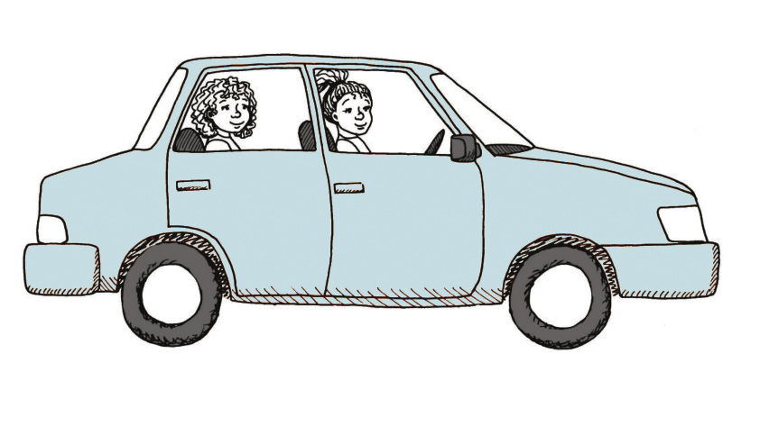
Figuur 5
2. Trek strepieslyne op die tekening van ’n kas op die volgende bladsy om vier rakke binne die kas aan te dui.
’n Tekening soos hierdie word ’n werkstekening genoem. ’n Werkstekening is ’n akkurate tekening wat werklike afstande aandui.
Soliede lyne word gebruik om die sigbare kante van voorwerpe op tekeninge aan te dui.
As jy iets wil aandui wat agter iets anders versteek is, gebruik jy ’n strepieslyn.
Net soos wat jy ’n taal soos Afrikaans nodig het om met ander mense te kommunikeer, is sketse en tekeninge ’n “taal”. En soos Afrikaans het hulle reëls om ons te help om hulle beter te verstaan. Hierdie reëls word tekenwerkkonvensies genoem.
Groottes, wat ook afmetings genoem kan word, word deur ’n dun afmetingslyn met pyle aan beide kante gewys. Hulle word ’n klein entjie weg van voorwerpe geteken.
Kort verlengingslyne, wat nie aan voorwerpe raak nie, wys vir jou wat gemeet word.
Afmetings word gewoonlik in mm aangegee.

900
1 200
Figuur 6
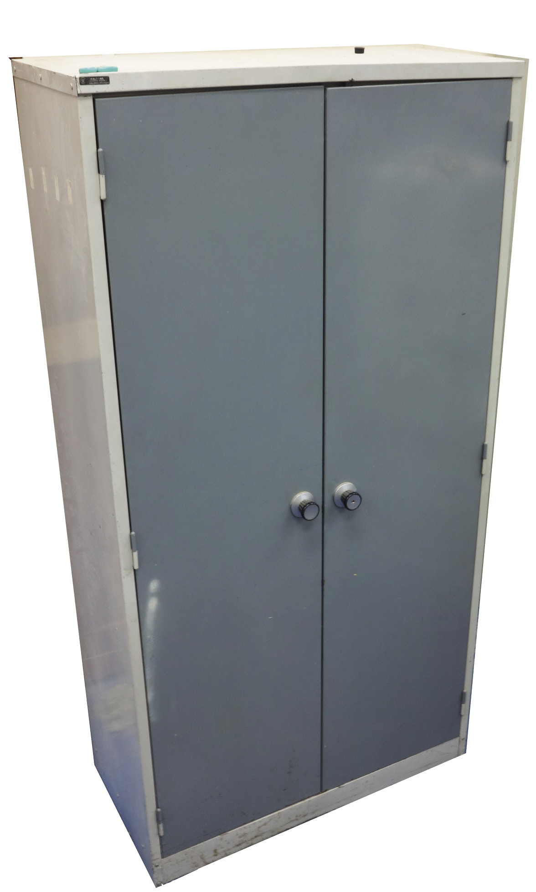 Figuur 7

Werkstekeninge word gebruik om dinge volgens presiese groottes te ontwerp. Ontwerpers kommunikeer die presiese groottes van elke onderdeel van ’n voorwerp in werkstekeninge, sodat elke onderdeel pas om die finale produk behoorlik te laat werk. Byvoorbeeld, ’n fietspomp kan nie ’n stootstang hê wat nie binne-in sy buitebuis pas nie. Sien figuur 8 hieronder.
Deur na party van die tekeninge te kyk en te oefen om sketse te maak het jy geleer om:
|
|
|
Jy het ook geleer dat afmetings gewys word deur die lengte van ’n voorwerp bo ’n afmetingslyn te skryf. ’n Afmetingslyn het klein pyltjies aan beide eindpunte. Hierdie pyltjies raak aan klein verlengingslyne wat aandui waar die lengte begin en waar dit eindig. Strepieslyne dui weggesteekte besonderhede op tekeninge aan. |
Huiswerk: bestudering van tekeninge van ’n fietspomp
tuit
buitebuis 180 lank

stootstang

handvatsel
Figuur 8
1. Benoem die onderdele van die pomp wat in
hierdie tekening gewys word.
2. Hoe lank is die buitebuis van hierdie fiets pomp?
Sketse en tekeninge is belangrike maniere om idees aan te dui en te kommunikeer.
Vir ontwerpers en tegnoloë is tekeninge en sketse dieselfde as om aantekeninge te maak. Dit herinner hulle aan hul idees en help hulle om hierdie idees met ander te deel. Sketse word gewoonlik sonder die hulp van enige instrumente gemaak. Al wat jy nodig het, is ’n potlood en papier.
3. Hoe lank is die stootstang? Hoe weet jy dit?
Kyk na die tekening van ’n ander fietspomp hieronder. Hierdie tekening is akkuraat, dus noem ons dit ’n skaaltekening. Dit is vier keer kleiner as die regte pomp. Ons sê dit is geteken op ’n skaal van 1:4. Dit beteken dat as jy die lengte van die buitebuis in hierdie tekening meet, dit vier keer kleiner sal wees as die afmetings van die buitebuis van die regte pomp.
320
Figuur 9: Fietspomp Skaal 1:4
4. Hoekom word die buitebuis van die pomp met soliede lyne geteken?
5. Watter ander onderdeel van hierdie pomp word met soliede lyne geteken?
6. Waarom is ’n gedeelte van die stootstang met strepieslyne geteken en ander dele met soliede lyne?
7. Watter soort lyn wys hoe lank die buitenste buis is?
8. Hoe lank sal die buitebuis van die werklike pomp wees?
9. Gebruik die skaal op die tekening om uit te vind hoe lank die handvatsel van die werklike pomp sal wees.
10. Trek nou ’n afmetingslyn op die pomptekening om te wys hoe lank die handvatsel sal wees.
11. Noem drie verskillende tipes lyne wat jy op die tekening kan sien.
12. Wat is die skaal van die werkstekening van ‘n kas drie bladsy vantevore? Meet afstande op die tekening om uit te vind wat die skaal is.

2.3 Vryhandsketse

Figuur 10
Die kunstenaar wat die voet in figuur 10 geteken het, het eers ligte dun lyntjies geteken, soos aan die regterkant gewys word.
Toe het sy die dowwe lyne as gidslyne gebruik om die voet te teken.

Figuur 11
Teken van lyne
|
Gebruik dun, dowwe lyne vir die gidslyne, wat konstruksielyne genoem word. Gebruik dik, donker lyne vir die buitelyne van sketse. |
1. Teken ’n reghoek met geronde hoeke.
- • Jou tekening moet ongeveer twee keer so groot wees as die tekening hier regs.
- • Teken ’n gidsraam. Moenie ’n liniaal gebruik nie. Maak gebruik van ligte gidslyne.
- • Merk die hoeke met dowwe lyne.
- • Maak die hoeke met ’n ronding.
- • Maak nou die buitelyn dikker.
Figuur 12
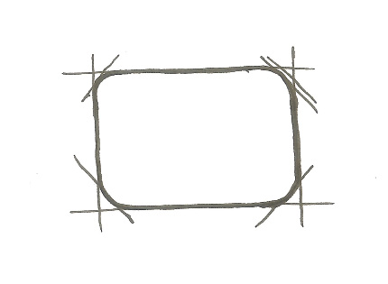
|
|
Huiswerk
2. Skets ’n driehoek met geronde hoeke.
- • Jou tekening moet omtrent drie keer groter wees as die tekening regs.
- • Skets ’n reghoekige gidsraam sonder om
’n liniaal te gebruik. - • Merk die middelpunt van een kant by B, en trek lyne na die teenoorgestelde hoeke.
- • Teken die hoeke met ’n ronding, soos
jy vir die reghoek gemaak het. - • Maak die buitelyn van die driehoek
met geronde hoeke dikker.
B
Figuur 13
|
|
3. Skets ’n sirkel.
- • Jou tekening moet omtrent vier keer so groot wees as die tekening regs.
- • Skets ’n vierkantige gidsraam. Moenie ’n liniaal gebruik nie.
- • Skets lyne van een diagonale hoek na die ander.
- • Merk die posisies C van die middelpunt op elke sy af.
- • Merk punte D op die diagonale, halfpad tussen die middelpunt en elke hoek. 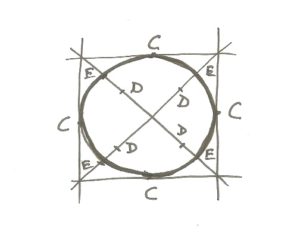
Figuur 14
- • Merk punte E halfpad tussen die D’s en
die hoeke. - • Skets ’n gebuigde lyn om die C’s met die E’s te verbind; C-E-C-E-C-E-C-E.
- • Jy het ’n sirkel geskets. Maak nou die buitelyn dikker.
|
|
4. Op die volgende bladsy word ’n ware grootte tekening van ’n fiets pomp gewys. Maak ’n akkurate 1:4 skaaltekening van die tekening van die pomp op die geruite papier hieronder.
Let op die volgende:
- • Die geruite papier hieronder het ’n 5 mm-spasiëring tussen die lyne.
- • Gebruik ’n liniaal en maak seker jy onthou die verskillende tipes lyne.
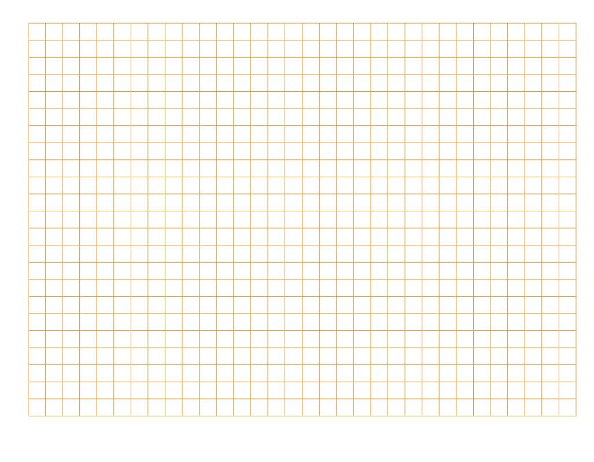
Om af te skaal beteken om die tekening kleiner te maak as die eintlike voorwerp.
Om op te skaal beteken om die tekening groter te maak as die eintlike voorwerp.

180
tuit

buitebuis

70
stootstang

handvatsel
Figuur 15: ’n Fietspomp
5. Die tekening onder aan die bladsy wys die vooraansig van ’n huis. Maak ’n groter tekening van die vooraansig van hierdie huis.
Let op die volgende:
- • Die 6 m lengte van die werklike huis moet op jou tekening 60 cm wees.
- • Dui die hoogte van die symuur aan deur ’n afmetingslyn op jou tekening te gebruik.
- • Dui die hoogte tot by die bopunt van die skoorsteen aan.

Vooraansig van die huis
Figuur 16
6 m
Volgende week
Volgende week gaan jy leer om tekeninge te maak wat meer as een sy van ’n voorwerp wys.
In hierdie hoofstuk gaan jy leer om twee tipes tekeninge te maak. Tekeninge help ons om vir ander mense te wys hoe ons idees lyk. Tekeninge help ons ook om ons idees te beoordeel, om van probleme bewus te word en om oplossings te ontwikkel.
3.1 Twee tipes tekeninge 31
3.2 3D skuinstekeninge 33
3.3 Perspektieftekeninge 39
 Figuur 1
Figuur 1

Figuur 2 (Tekening A)
Figuur 3 (Tekening B)
3.1 Twee tipes tekeninge
1. Kyk weer na tekeninge A en B. Sien jy tekeninge van twee verskillende tafels, of twee verskillende tekeninge van dieselfde tafel? Dink mooi voor jy antwoord.
2. Kyk na tekening A en tekening B op die vorige bladsy. Kyk ook na tekening C en tekening D op die volgende bladsy. Watter een van die twee tekeninge op die volgende bladsy is dieselfde as tekening A, behalwe dat dit kleiner is? Verduidelik hoekom jy so sê.
3. Hoe verskil tekeninge C en D van mekaar?
Figuur 4: ’n Perspektieftekening (Tekening C)
Figuur 5: ’n 3D skuinstekening (Tekening D)
|
Tekeninge soos dié in Figuur 4 (tekening C) word perspektieftekeninge genoem, of 3D artistieke tekeninge. In ’n perspektieftekening probeer die kunstenaar wys wat jy werklik sien. Jy kan nie van ’n perspektieftekening akkurate afmetings maak nie. Tekeninge soos dié in Figuur 5 (tekening D) word 3D skuinstekeninge genoem. Hulle lyk anders as dit wat jy in werklikheid sien as jy na die voorwerp kyk. Afmetings kan van 3D skuinstekeninge geneem word. |
In die volgende les gaan jy ’n paar 3D skuinstekeninge maak.

3.2 3D skuinstekeninge
Maak ’n 3D skuins projeksie tekening
Wanneer jy die instruksies hieronder volg, sal ’n goeie 3D skuinsskets van ’n stoof maak.
Dit is makliker as jy eers ’n gidsraam teken wat die vorm van die stoof wys. Doen dit op die volgende bladsy. Moenie ’n liniaal gebruik nie.
Om ’n gidsraam te teken, teken eers ’n reghoek om die kas se voorkant te wys, soos in stap 1 hieronder. Teken die reghoek links onder op die bladsy.
Teken nog ’n reghoek van dieselfde grootte soos wat in stap 2 hieronder gewys word. Trek dan skuins lyne, soos in stap 3, om die kante van die gidsraam wat van die voorkant na die agterkant gaan aan te dui.
Figuur 6

stap 1 stap 2 stap 3
Figuur 7
|
Die woord skets word dikwels gebruik vir ’n tekening wat sonder ’n liniaal of ander tekeninstrumente gemaak is. In plaas daarvan om “skets” te sê kan jy ook vryhandtekening sê. |
Maak jou 3D skuinsskets op hierdie bladsy. Teken die skets groot.
|
|
Verander jou gidsraam in ’n stoof
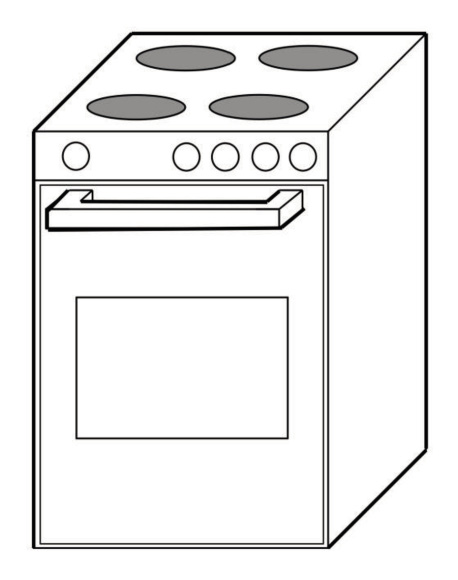
Figuur 8
Kyk nou of jy jou gidsraam in ’n stoof kan verander. Hier is ’n paar wenke:
- • Die stoofplate bo-op die stoof is sirkels. Op tekeninge soos hierdie sal hulle plat gedrukte sirkels (ellipse) wees.
- • Die sirkels van die knoppe is regte sirkels. Dit is omdat alles op die voorste sy van die tekening dieselfde is as in die werklike lewe.
- • Kyk hoe die handvatsel geteken is. Dit kom uit die vooraansig uit. Om dit te doen, gebruik skuins lyne wat vorentoe kom.
- • Maak alle lyne wat jy op die voorwerpe kan sien dik.
Iets om tuis te doen
Dit is makliker om 3D tekeninge op geruite papier te maak, soos die voorbeeld op die volgende bladsy. Maak ’n beter tekening van die stoof op die geruite papier. Een van die skuins lyne is reeds getrek.
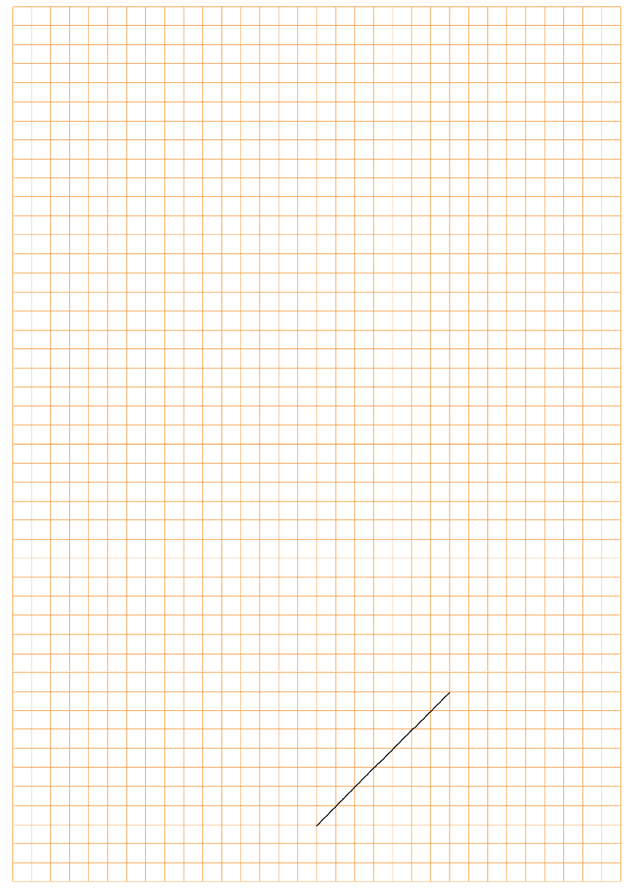
Akkurate 3D skuinstekening
Die tekening hieronder is ’n akkurate skuinstekening van die stoof.
1. Skryf die lengte, hoogte en breedte van hierdie stoof neer.
2. Meet nou die lengte, hoogte en breedte op die tekening met ’n liniaal.
3. Wat sien jy raak met betrekking tot die breedtelyn? Is dit op dieselfde skaal geteken as die lengte- en hoogtelyn?

850

565


600
Skuinsaansig
Stoof
Skaal 1:10

Figuur 9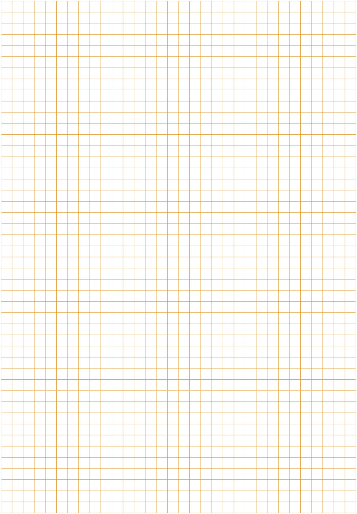
’n Paar belangrike dinge oor skuinstekeninge
|
Vir die vooraansig van ’n skuinstekening is ons afmetings presies soos die skaal sê. Daarom, as die lengte van die voorwerp 600 mm is en die skaal is 1:10, sal jy die lengte Maar, in die rigting wat die skuins breedte wys, moet jy die ware skaalafmeting halveer. As die breedte dus 565 mm, en die skaal 1:10 is, moet jy die breedtelyn op 282,5 mm of |
4. Gebruik die geruite blok op die vorige bladsy om ’n akkurate skuinstekening van die stoof op ’n skaal van 1:5 te maak.
By 3D skuinstekeninge is die konstruksielyne parallel, soos hierbo gewys.

3.3 Perspektieftekeninge
As jy iets ver weg sien, lyk dit klein. As jy naby ’n voorwerp is, lyk dit groot.
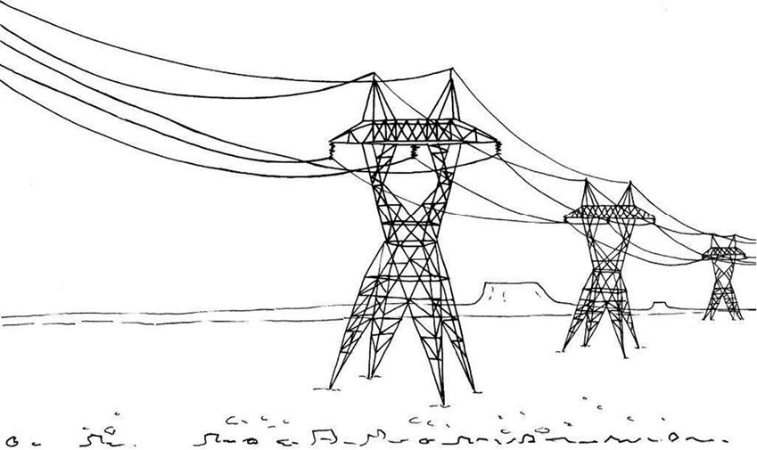
Figuur 11
’n 3D tekening wat wys dat dinge op ’n afstand kleiner word, word
’n perspektieftekening genoem.
Kyk na hierdie tekening van ’n heining. Dit is geteken om tot in die verte aan te gaan.
_fmt.png)
Figuur 12
Gebruik die stappe hieronder om hierdie heining op die volgende bladsy te teken
1. Begin in die onderste hoek aan die linkerkant van jou bladsy en teken ’n heiningpaal. Dit sal die langste paal wees want dit is die naaste aan jou.
2. Teken ’n punt in die boonste hoek aan die regterkant van die bladsy. Hierdie punt word die verdwynpunt (VP) genoem. Dit verteenwoordig ’n punt so ver weg dat jy nie meer kan sien hoe hoog iets is nie.
3. Teken ’n dun gidslyn van die bopunt van die voorste paal tot by die verdwynpunt (VP). Jy kan ’n liniaal hiervoor gebruik.
4. Trek nog ’n dun gidslyn van die onderpunt van die voorste paal tot by die verdwynpunt.
5. Teken ’n tweede paal agter die eerste een. Die onderste end van hierdie paal moet by die onderste gidslyn begin en die paal hou op by die boonste gidslyn.
6. Hou aan om nog pale te teken terwyl jy in die rigting van die verdwynpunt beweeg.
7. Onthou dat die pale sal lyk of hulle nader en nader aan mekaar staan.
8. Voeg nou ’n paar kruislyne by om die heiningdraad voor te stel.
9. Maak jou buitelyne dik en teken beskaduwing om jou heiningpale mooi te laat lyk.
Teken die heining op hierdie bladsy.
|
|

Teken ’n vuurhoutjiedosie in perspektief
Teken ’n reghoek om die voorkant van die vuurhoutjiedosie voor te stel in die onderste hoek aan die linkerkant van hierdie bladsy. ’n Deel van die reghoek is reeds vir jou geteken.
Teken ’n dun gidslyn uit elke hoek van die reghoek na die verdwynpunt. Jy mag ’n liniaal gebruik.

Figuur 13
Beweeg van die verdwynpunt af weg op die gidslyn en merk ’n punt (B1) af, wat die breedte van die vuurhoutjiedosie reg laat lyk.
Trek van hierdie punt (B1) ’n vertikale lyn na die onderste gidslyn. Dit is die rand van die agterkant van die vuurhoutjiedosie.
Trek vanaf dieselfde punt (B1) ’n horisontale lyn na die gidslyn aan die linkerkant. Dit sal die borand van die vuurhoutjiedosie se rugkant voorstel.
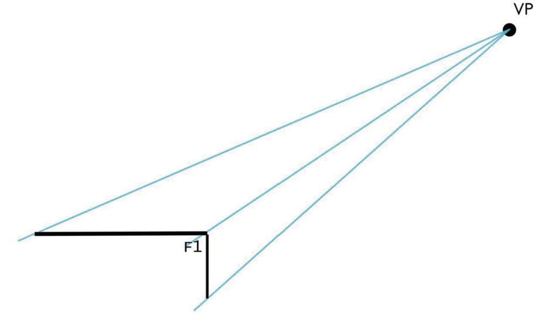
Figuur 14
Perspektieftekening met tekstuur en beskaduwing
Kyk na die oop vuurhoutjiedosie regs. Dik en dun lyne word gebruik om die kante te laat uitstaan. Probeer dit op die vuurhoutjiedosie wat jy reeds geteken het, of op ’n nuwe tekening.

Figuur 15
Gebruik enkel verdwynpunt perspektief en teken ’n oop vuurhoutjiedosie in die spasie hieronder.
|
|
Voeg meer beskaduwing en selfs kleur by
Wanneer ’n oppervlak plat is, lyk die hele oppervlak of dit dieselfde kleur het. Maar, afhangend van waar die lig vandaan kom, lyk party oppervlakke donkerder as ander.
Om beskaduwing te gebruik om ’n
gidsraam 3D te laat lyk, teken ’n nuwe
gidsraam op die volgende bladsy en
doen die volgende:

Figuur 16
- • Kleur die oppervlakke aan die
voorkant, die bokant en sye liggies in met een kleur. Jy kan ’n potlood of kleurpotlood gebruik. - • Kies die oppervlak wat die tweede donkerste sal wees. Kleur hierdie oppervlak ’n tweede keer in.
- • Kies die aansig wat die donkerste sal wees. As die lig agter die tekening is, sal dit die vooraansig wees. Kleur hierdie oppervlak nog twee keer liggies in. Die donkerste aansig sal dus drie keer ingekleur wees.
|
|

Volgende week
Volgende week sal jy oor meganiese stelsels leer. Jy sal sien hoe hefbome werk om dit makliker te maak om voorwerpe te beweeg.
In hierdie hoofstuk gaan jy meer leer oor maniere waarop mense dit regkry om dinge te doen wat hulle nie met hul liggame kan doen nie.
4.1 Lig voorwerpe met ’n hefboom 47
4.2 Beweeg voorwerpe sonder om aan hulle te raak 52
4.3 Doen verskillende goed met hefbome 59
 Figuur 1
Figuur 1
Spesiale projekte
As jy ’n bietjie tyd tuis of by die skool het, probeer gerus een of meer van die volgende aktiwiteite:
1. Bou ’n werkende model van die waterhefboom op die volgende bladsy. As jy dit binne die volgende twee dae kan maak, kan jy dit in les 4.3 gebruik.
2. Kyk versigtig na die kleurdiagramme op die volgende bladsy. Probeer om te sien watter eienskappe van hefbome in die diagramme gesien kan word. Skryf opskrifte vir die tekeninge om te verduidelik wat hulle uitbeeld.
4.1 Lig voorwerpe met ’n hefboom
In die prente hieronder probeer Tom om die een kant van ’n betonblok met ’n hefboom op te lig. Die prente wys drie verskillende maniere waarop hy kan probeer om dit te doen.
1. Watter manier dink jy sal die beste werk, en waarom dink jy so?
Die hefboom rus op ’n kleinerige klip en sal op die klip beweeg. As Tom een punt van die hefboom afwaarts stoot, druk die ander punt die betonblok opwaarts.

metode 1
metode 3

metode 2
Figuur 4
2. Beskryf wat verskillend is in verband met die hefboom in elk van die drie gevalle hierbo.
Sluit by twee klasmaats aan en werk met ’n hefboom
Julle het drie voorwerpe vir hierdie aktiwiteit nodig:
- • ’n stok van omtrent 30 cm lank, wat as hefboom gebruik kan word,
- • ’n baksteen of klip omtrent so groot soos ’n baksteen, en
- • iets waarop die hefboom ondersteun kan word.
Doen nou die volgende:
Gebruik die stok as ’n hefboom om die een kant van die baksteen op te lig.
Figuur 5
|
Die punt waar die stok deur die kleiner klip ondersteun word, word die steunpunt of spilpunt genoem. |
Maak beurte om die stok as hefboom te gebruik om een kant van die baksteen op te lig. Gebruik verskillende posisies vir die steunpunt, sodat jy kan leer hoe om die vrae hieronder te beantwoord.
3. In watter geval help die hefboom jou die meeste? Is dit wanneer die steunpunt naby die baksteen is, of is dit wanneer die steunpunt ver van die baksteen is?
Indien jy nie gedoen het soos hierbo nie, doen die volgende:
Maak soos gewys word in die prent hieronder, en plaas jou potlood teen die kant van ’n boek en probeer om die een kant van ’n ander boek op te lig.

Figuur 6
Doen dit met die rand van die linkerkantste boek in verskillende posisies onder die potlood.
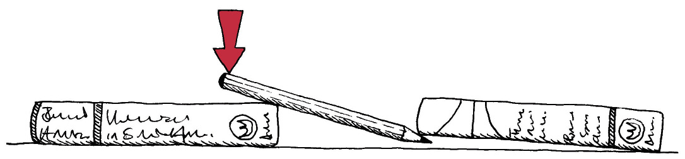
Figuur 7
4. In watter posisie van die steunpunt gee die potlood jou die meeste “voordeel” vir die oplig van die boek?
In hierdie geval beteken die woord “voordeel” dat die hefboom dit vir jou makliker maak om die voorwerp op te lig.
Party woorde wat vir jou nuut mag wees, of wat op ’n nuwe manier gebruik word, word in aanhalingstekens gedruk, soos byvoorbeeld “voordeel”. Dit is om vir jou te sê dat jy dalk nie dadelik die woord mag verstaan nie, maar soos wat jy voortgaan met die les sal jy leer om dit te verstaan.
|
As iets te swaar is om met die hand op te lig kan jy ’n hefboom gebruik om jou te help. As jy ’n swaar voorwerp wil oplig moet jy ’n lang hefboom gebruik, en moet die steunpunt naby die voorwerp wees wat jy wil oplig. As jy ’n sagte of swak afwaartse druk op die een kant van die hefboom uitoefen, sal daar ’n sterk opwaartse druk teen die voorwerp aan die ander kant van die hefboom wees. |
Wetenskaplikes en tegnoloë gebruik die term “meganiese voordeel” wanneer hulle hierna verwys. In die prent hieronder gee die hefboom jou ’n groter meganiese voordeel as die steunpunt nader aan die baksteen is.
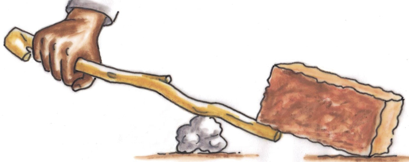
Figuur 8: Groot meganiese voordeel
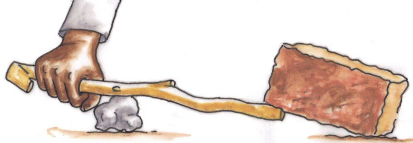
Figuur 9: Klein meganiese voordeel
5. Kyk weer na Figuur 4 van hierdie hoofstuk. Watter metode gee aan Tom die grootste meganiese voordeel wanneer hy die hefboom gebruik?
|
Die afwaartse druk wat Tom op die hefboom uitoefen word die insetkrag of mag genoem. Die gewig van die betonblok wat probeer om die ander kant van die hefboom onder te hou word die las genoem. Die opwaartse krag op die las word die uitsetkrag of die effek genoem. ’n Hefboom soos hierdie een, waar die steunpunt tussen die insetkrag en uitsetkrag is, word ’n klas 1-hefboom genoem. |

insetkrag
uitsetkrag
las
Figuur 10
As jy ’n hefboom gebruik om ’n voorwerp op te lig kan die druk op die voorwerp sterker, swakker, of dieselfde wees as jou insetkrag op die hefboom.
6. Waar is die insetkrag, die las en die steunpunt in elkeen van hierdie prente? Skryf jou antwoorde langs die prente neer.
Die uitsetkrag kan kleiner wees as die insetkrag. In so ’n geval sê tegnoloë dat die meganiese voordeel kleiner as 1 is.
Die uitsetkrag kan groter wees as die insetkrag. In so ’n geval sê tegnoloë dat die meganiese voordeel groter as 1 is.
Indien die uitsetkrag gelyk is aan die insetkrag, sê tegnoloë dat die meganiese voordeel 1 is.
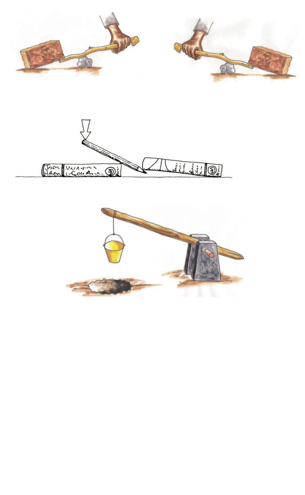
Figuur 11

Belangrik: iets wat jy tuis moet doen
Bring ’n boks of twee stukke karton wat minstens so groot is soos ’n A4-papiervel na jou volgende tegnologie klas. Jy gaan ’n kartonhefboom maak en ’n paar eksperimente uitvoer.
Dit is goed vir die omgewing as ons bokse of stukke karton wat in die straat rondlê, optel. Tel daarom sulke bokse en stukke karton op en hou ons strate skoon.
4.2 Beweeg voorwerpe sonder om aan hulle te raak
’n Hefboom kan om die steunpunt beweeg. Ons sê ook ’n hefboom “draai” om die steunpunt.

Figuur 12
In die diagramme hieronder is die steunpunt in verskillende posisies.
In watter geval is die meganies voordeel groter as 1, gelyk aan 1, of kleiner as 1.
situasie A
situasie C
situasie B
Figuur 13
Maak ’n hefboom met ’n basis
In hierdie aktiwiteit moet jy ’n hefboom maak wat jy kan gebruik om ’n paar eksperimente mee te doen. Om die eksperimente te doen sal jou help om hefbome beter te verstaan.
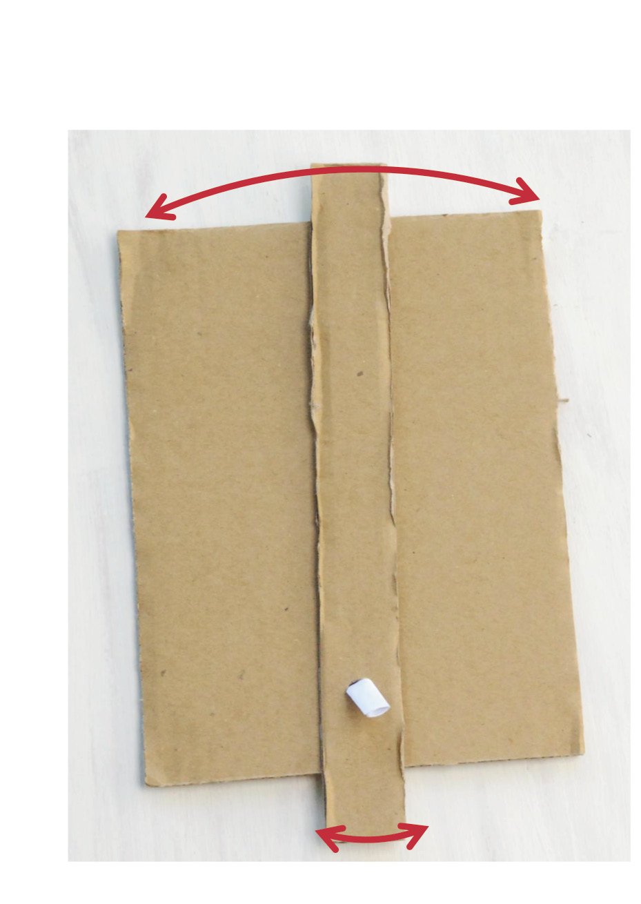
Figuur 14
1. Merk die steunpunt van die hefboom in die foto.
In plaas van steunpunt kan ons die woord spilpunt gebruik, want dit beteken dieselfde.
Jy sal die gereedskap en die materiaal hieronder nodig hê as jy jou hefboom van karton wil maak.
|
Gereedskap: |
Materiaal: |
|
|
2. Voordat jy begin moet jy goed na die foto op die vorige bladsy kyk. Maak seker jy verstaan hoe die hefboom gaan werk.
Gebruik ’n strook karton van omtrent 30 cm lank en 3 cm breed vir die hefboom. Merk die posisie vir ’n gaatjie omtrent 4 cm van die een punt, in die middel van die karton se breedte.
Jy het dalk konstruksiestelle of geperforeerde Masonite beskikbaar. Gebruik dit in plaas van karton vir hierdie werk. Moet egter nie die kans om nuwe basiese vaardighede te leer beperk deur “maklike” materiale te gebruik nie.
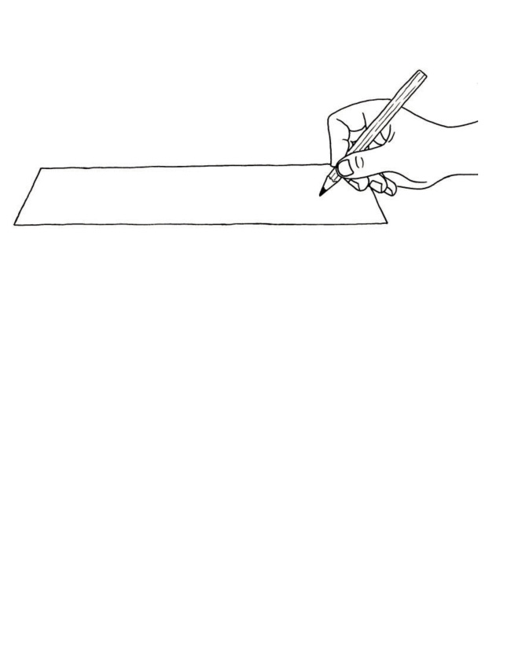
Figuur 15
3. Gebruik ’n skerp potlood om ’n gaatjie by die merk te maak.
Figuur 16
Veiligheidsmaatreël:
Maak seker jy druk nie die potlood in jou vinger in nie.
4. Maak ’n gaatjie in die kartonvel, omtrent 8 cm van die een end af, soos in die diagram gewys word.

Figuur 17
Dit is die basis waaraan jy jou hefboom gaan vasheg.
5. Jy kan ’n “papierspyker” gebruik om jou hefboom aan die basis vas te heg. Dit kan as steunpunt dien waarom die hefboom kan swaai. Maak ’n papierspyker deur papier styf om ’n potlood te rol, soos wat hieronder gewys word.


Figuur 18
Sodra jy dink dat dit is sterk genoeg, sny die oorblywende papier af.
Die gate wat jy in die kartonstrook en die kartonvel gesteek het, sal glad wees aan die een kant en grof aan die ander kant.
gladde kant van ’n ingesteekte gat
rowwe kant van ’n ingesteekte gat
Figuur 19
6. Plaas die kartonstrook op die kartonvel sodat die gladde kante van die gate tussen die kartonstrook en die kartonvel is. Steek jou papierspyker deur die gate sodat dit die kartonstrook met die kartonvel verbind.


steunpunt

steunpunt
Figuur 20
7. Vou die papierspyker-pen aan beide kante om. Heg dit met kleefband aan die onderend van die ondersteuningsvel vas.

steunpunt
Figuur 21
Probeer om jou hefboom te gebruik om ’n klein sakkie sand op jou lessenaar rond te beweeg.

Figuur 22
8. Dit mag dalk nie goed werk as jy die sakkie sand wil rondbeweeg nie. Dink daaroor na en beskryf dan hoe jy die hefboom kan verbeter sodat dit beter sal werk om die sakkie rond te beweeg.
Hier is twee verbeteringe wat jy aan jou hefboom kan aanbring:
- • Jy kan snitte maak aan beide kante en die karton vou om flense te maak aan elke punt van die hefboom. Die onderstaande skets wys ’n stuk papier wat geel is aan die bokant en rooi aan die onderkant. Daar is een snit daarin gemaak en ’n deel van die papier is omgevou om ’n flens te maak.

’n flens

Figuur 23
- • Jy kan ’n papierstrook byvoeg om te verhoed dat die hefboom oplig.
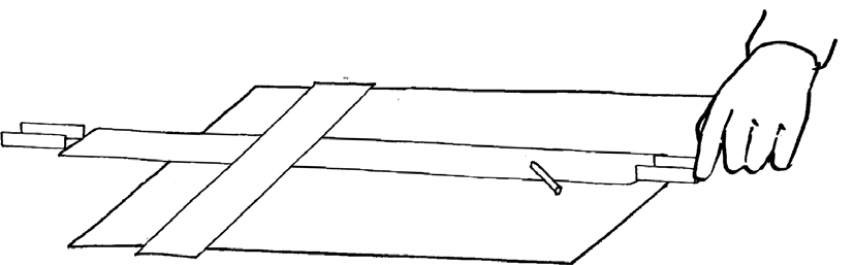
Figuur 24

|
Beoordeling en verbetering |
Tegnoloë beoordeel hulle werk gedurig. As hulle iets sien wat nie goed werk nie verander hulle dit om dit beter te laat werk. Wanneer julle later in hierdie kwartaal ’n mini-PAT doen sal julle ’n toestel ontwerp wat met twee hefbome werk. Jy sal ’n werkende model van jou ontwerp moet maak. Terwyl jy dit doen, behoort jy ook jou model deurlopend te beoordeel. Soek na moontlikhede om jou ontwerp en jou werkende model te verbeter.
skeiers
steunpunt
hefboom
skeiers
basis
Figuur 25
Jy kan jou hefboom-op-’n-basis verbeter deur skeiers in te voeg om ’n effense afstand tussen die hefboom en die basis te skep.
Jy kan die skeiers uit dieselfde karton sny wat jy vir die hefboom gebruik het.
Jy kan hulle met gom aanmekaar en aan die hefboom heg. Dit kan selfs beter wees as jy verdere skeiers by die steunpunt gebruik. Jy sal gate in jou skeiers moet sny sodat die pen of papierspyker deur die gate kan pas.
Ronde skeiers met gate in die middel word wasters genoem. Wasters word dikwels gebruik as voorwerpe met boute en moere aanmekaar geheg word.
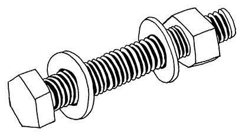Figuur 26
4.3 Doen verskillende goed met hefbome
Verander die rigting van beweging
Hefbome kan gebruik word vir meer as om net meganiese voordeel te verkry. Wanneer jy die vloer met ’n besem vee wat ’n lang handvatsel het gebruik jy die besem as ’n hefboom. Die lang handvatsel maak dit moontlik om oor ’n groot oppervlak te vee deur jou hande slegs ’n kort afstand te beweeg. In hierdie geval gee die hefboom (besemstok) jou ’n afstandsvoordeel, al is daar geen meganiese voordeel nie.
Hefbome kan ook die rigting van die beweging verander. Wanneer jy die een punt van die blou hefboom hieronder afdruk, beweeg die ander punt op.
Figuur 27
 Figuur 28
Figuur 28
In die geval hierbo, is die uitsetbeweging in die teenoorgestelde rigting as die insetbeweging. Soos in die diagram hieronder kan skakels en leibalke gebruik word om die verandering van beweging, wat deur die hefboom veroorsaak word, te beheer.
Die blou staaf in hierdie diagram is ’n hefboom wat om punt O draai. Die geel staaf is ’n stok wat gebruik kan word om punt A van die hefboom mee te stoot. Die rooi staaf kan slegs tussen die twee swart stroke beweeg.
Die swart kolle by A en B dui die
skakels aan (byvoorbeeld, papier-spykers wat losweg in die gate
pas), waarom die geel, blou en rooi
stawe kan draai.
In watter rigting sal die rooi staaf beweeg as die geel staaf in die rigting van die blou pyl gestoot word? Maak ’n pyl op die diagram om die rigting aan te dui.
Indien jy wil, kan jy ’n sisteem soos hierdie uit karton bou.

Figuur 29
A
B
Evalueer ’n ontwerp
Simon wil ’n toestel bou wat hom sal help om swaar voorwerpe op te lig. Sy idee is om een hefboom met ’n ander hefboom aan te dryf, sodat hy ’n groot meganiese voordeel kan hê. Hy het hierdie tekening van sy ontwerp gemaak.
Dink jy Simon se ontwerp sal werk?
Skryf neer waarom jy dink dit sal werk, of waarom dit nie sal werk nie.
Figuur 30
Onthou om te sê waarom jy so dink, en maak ’n voorstel oor hoe hy sy ontwerp kan verbeter.
Herontwerp ’n waterhefboom
|
Kyk weer na figuur 3 op bladsy 46, dit wys ’n groot hefboom wat emmers water uit ’n put lig. Jong en sterk mense kan maklik die hefboom by die kort kant afdruk om ’n emmer water uit ’n put te lig. Dis egter moeilik vir ouer en siek mense, wat nie so sterk nie, is om dit te doen. |
Hoe kan hierdie hefboom herontwerp word sodat dit makliker sal wees om ’n emmer water op te lig?
Volgende week
In die volgende hoofstuk gaan jy meer leer oor mag insetkrag en las, en hoe die steunpunt se posisie verander kan word om ander hefboomtipes te maak. Jy gaan ook meer leer oor ander hefboomtipes.
In hierdie hoofstuk gaan jy leer van twee ander hefboomtipes, wat ook “hefboomklasse” genoem word. In die geval van klas 1-hefbome is die steunpunt (spilpunt) iewers tussen die mag en die las. By die ander twee hefboomklasse is die steunpunt (spilpunt) op die punt.
5.1 Die drie hefboomklasse 63
5.2 Praktiese voorbeelde van verskillende hefboomklasse 66
5.3 Nog praktiese voorbeelde van verskillende hefboomklasse 69

 Figuur 1
Figuur 1
Figuur 2: Hierdie prente wys twee velle geriffelde karton van omtrent 20 cm lank en 10 cm breed. Die een stuk het die riffels oor die breedte en die ander stuk oor die lengte.
Figuur 3: Beide stukke karton is in die middel gevou om vere te vorm. Die kante is omgevou om flense te vorm.


5.1 Die drie hefboomklasse
Lig jou vinger op drie verskillende maniere
Plaas jou potlood op die lessenaar voor jou.

Figuur 4
Druk die potlood in die middel afwaarts met een vinger, en probeer dan jou vinger oplig met die potlood wat jy aan die skerp kant vashou, soos hieronder aangedui. Wanneer jy dit doen, tree die potlood as ’n hefboom op.

Figuur 5
1. Die steunpunt van die hefboom is aan die regterkant van die potlood, waar dit op die lessenaar rus. Merk die insetkrag met ’n pyltjie op die skets hierbo. Waar is die las?
2. In figuur 5 is die insetkrag aan die een kant van die hefboom, en die steunpunt aan die ander kant. Hoe verskil ’n klas 1-hefboom hiervan?
Druk die potlood met een vinger afwaarts aan die skerp kant en probeer jou vinger oplig deur die potlood in die middel op te lig, soos hieronder gewys.
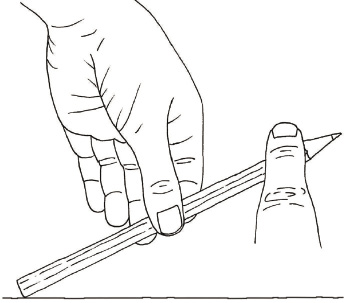
Figuur 6
3. Die steunpunt van die potlood is aan die linkerkant van die hefboom, waar dit op die lessenaar rus. Merk die insetkrag met ’n pyltjie op die skets hierbo. Waar is die las?
4. In die geval hierbo is die las aan die een kant van die hefboom en die steunpunt aan die ander kant. Hoe verskil die situasie op die vorige bladsy hiervan?
In die geval hierbo het jy die potlood as ’n klas 3-hefboom gebruik. Op die vorige bladsy het jy die potlood as ’n klas 2-hefboom gebruik.
Om ’n potlood as ’n klas 1-hefboom te gebruik moet jy ’n ondersteunende punt iewers tussen die twee eindpunte plaas om as steunpunt op te tree.
Figuur 7

las
insetkrag
5. Doen weer die eksperimente op die vorige twee bladsye. In watter geval kry jy die grootste meganiese voordeel: wanneer jy die potlood gebruik as ’n klas 2-hefboom of wanneer jy dit as ’n klas 3-hefboom gebruik?

|
|
insetkrag

las
Figuur 8
insetkrag
las
Figuur 9
las
insetkrag
Figuur 10 |
5.2 Praktiese voorbeelde van verskillende hefboomklasse
Die seun gaan die hamer swaai om die spyker in die muur in te kap.

insetkrag
effek
steunpunt
Figuur 11
In hierdie situasie vorm sy voorarm en die hamer saam ’n hefboom. Die hefboom swaai om die elmboog wat die spilpunt (steunpunt) vorm.
1. Is sy voorarm en die hamer ’n klas 1-hefboom, ’n klas 2-hefboom of ’n klas 3-hefboom?
2. Kan jy aan ’n sport dink waar ’n deelnemer ’n voorwerp swaai om iets te slaan?
3. Laat rus jou regterelmboog op die lessenaar en tel dan iets met jou regterhand op terwyl jy jou elmboog op die lessenaar hou.
Doen dit weer, maar hou hierdie keer jou linkerhand liggies op jou regterarm, net bo jou elmboog.
Voel jy die spierbeweging binne jou arm?
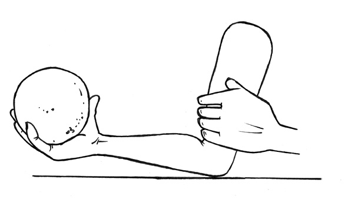 Figuur 12
Die diagram hieronder verduidelik die werking van jou arm.

las
steunpunt
inset-
krag
Figuur 13
|
Wanneer jy iets in jou hand optel werk jou arm soos ’n klas 3-hefboom, en is die insetkrag tussen jou elmboog en jou hand. Jou elmboog tree as ’n steunpunt (spilpunt) op en die las is in jou hand. |
4. Trek in elk van die prente hieronder ’n klein driehoekie om te wys waar die steunpunt (spilpunt) is, en ’n pyltjie om te wys waar die insetkrag is. Sê ook in elke geval watter klas hefboom dit is.
(a) kombuistang
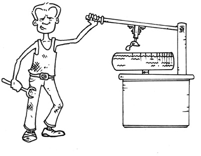
(b) man wat meganiese buitebandhefboom op staander afwaarts druk
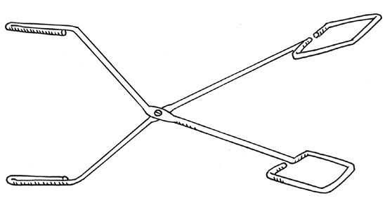
(c) ’n ander tipe kombuistang
Figuur 14

5.3 Nog praktiese voorbeelde van verskillende hefboomklasse
steunpunt

las
insetkrag
Figuur 15
Wanneer jy ’n kruiwa gebruik, is die as van die wiel die steunpunt, en jou arms verskaf die insetkrag. Die las is tussen die steunpunt en die insetkrag. Dit is hoe ’n klas 2-hefboom werk. Die neutkraker hieronder is ook ’n klas 2-hefboom.
’n Maklike manier om te onthou hoe ’n klas 2-hefboom werk is om aan ’n kruiwa of ’n neutkraker te dink.
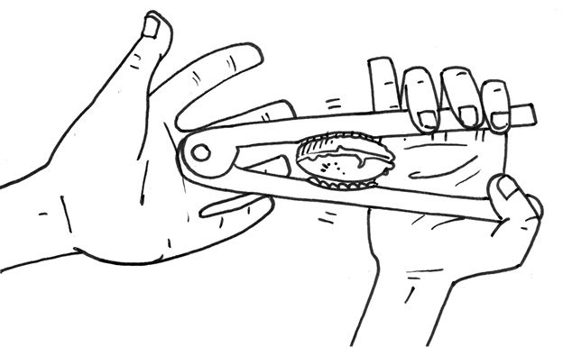
Figuur 16: ’n Neutkraker
Maak ’n hefboom op ’n basisplaat
Gebruik geriffelde karton om ’n hefboom op ’n basisplaat te maak, soos wat in die skaaltekening gewys word. Die skaal van die tekening is 1:3.

Figuur 17
Die riffels van die karton moet in die lengte van die hefboom loop. Gebruik ’n stuk karton wat 6 cm wyd is, en vou met die lengte langs om flense te vorm, soos wat regs gewys word.
Figuur 18
Jy kan hierdie hefboom gebruik om ’n klein boksie wat met sand gevul is te beweeg. Jy kan dit op twee maniere doen: deur die hefboom as ’n klas 2-hefboom of as ’n klas 3-hefboom te gebruik.
1. Maak vryhandsketse om die twee maniere waarop jou hefboom gebruik kan word te illustreer.
2. Gebruik jou hefboom en sandboksie en ondersoek in watter geval jy die grootste meganiese voordeel kry: met ’n klas 2-hefboom of met ’n klas 3-hefboom. Skryf ’n kort verslag daaroor hieronder.

Volgende week
In die volgende hoofstuk gaan jy ondersoek en leer hoe hefbome gekoppel kan word, en hoe hulle vir ’n verskeidenheid doeleindes gebruik kan word.
In hierdie hoofstuk gaan jy leer hoe hefbome gekoppel word om verskillende gereedskapstukke te maak.
6.1 Klas 1-hefboompare 73
6.2 Nog gereedskapstukke met hefbome 77
6.3 Baie hefbome in een toestel 80
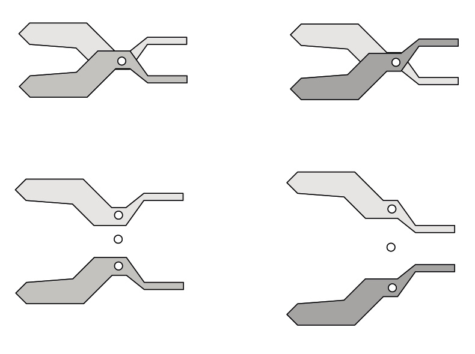
Figuur 1: ’n Tang bestaan uit twee hefbome wat dieselfde steunpunt gebruik.

Figuur 3
6.1 Klas 1-hefboompare
Werk op verskillende maniere met skêre
Beantwoord eers die vrae hieronder en doen dan die eksperiment. Vind uit watter manier die beste is om ’n skêr mee te gebruik. Kyk na die twee maniere wat in die prente hieronder gebruik word.
 Figuur 4 Figuur 5
Figuur 4 Figuur 5
1. Wat is die verskil tussen hierdie twee maniere om ’n skêr te gebruik?
2. Watter een van die twee maniere sal die maklikste wees om die dik karton te sny? Verduidelik jou antwoord.
3. Is daar enige hefbome in ’n skêr? Indien wel, hoeveel en watter klas hefbome is hulle?
4. In diagram A, B en C hieronder, word die insetkrag op die blou lem met ’n rooi pyl aangedui. In diagram A word die las op die blou lem met ’n swart pyl aangedui.
Figuur 6: ’n Skêr bestaan eindelik uit twee lemme wat aan mekaar verbind is sodat hulle soos twee hefbome werk.
(a) Teken ’n pyl om aan te dui waar die las in beide diagramme B en C is.

A
C
B
Figuur 7
5. In watter geval is die meganiese voordeel van die blou mes die grootse en in watter geval is dit die kleinste?
6. In watter geval, of gevalle, is die meganiese voordeel van die blou hefboom groter as 1?

Kan skêre deur dik voorwerpe knip?
1. Hoekom is ’n gewone skêr nie geskik om takke van ’n boom af te knip nie?

Figuur 8
2. Maak ’n vryhandskets van die soort skêr wat die takke van ’n boom kan afknip. Hoekom sal hierdie tipe skêr werk?
|
|
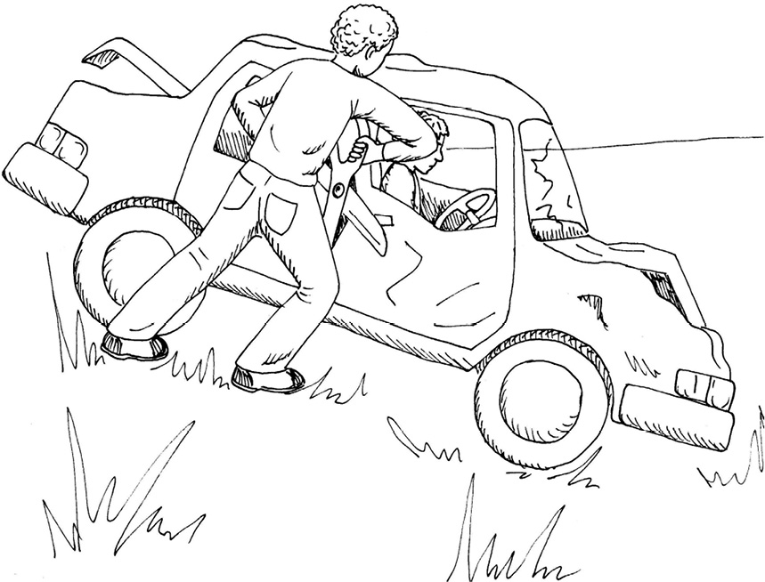 Figuur 9
3. Waarom sal ’n gewone skêr nie veel kan help om ’n verfrommelde motor oop te sny om vasgekeerde passasiers uit te haal nie?
4. Veronderstel jy moet ’n stuk snygereedskap ontwerp wat gebruik kan word om deur metaal te sny. Hoe sal hierdie stuk gereedskap van ’n gewone skêr verskil?

6.2 Nog gereedskapstukke met hefbome
Wat is die beste manier om ’n neut oop te kraak?
Jy kan pare van hefbome gebruik om dinge saam te pers, te breek of te kraak.

Ontwerp A Ontwerp B Ontwerp C
Figuur 10
1. Watter hefboomklas is by elk van hierdie neutkrakers hierbo gebruik?
2. Teken ’n hand, in elke geval hieronder, om te wys hoe jy die hardste drukking met jou hand op die neut kan toepas.
Figuur 11
3. Merk en voeg ’n byskrif by waar die krag, las en steunpunt op elk van hierdie tekeninge hierbo sal wees.
4. Watter een van hierdie drie neutkrakers dink jy sal die beste werk? Verduidelik waarom jy so dink.
’n “Byskrif” is ’n woord of sin wat jy langs ’n tekening skryf om die naam van ’n onderdeel van die tekening te wys.
Drie tipes kombuistange en twee pare tange word op die volgende bladsy gewys.
5. Beskryf die verskille tussen kombuistangtipe A en B.
6. Hoe verskil kombuistang C van tipes A en B?
7. Watter een van hierdie drie kombuistange werk op dieselfde manier as ’n gewone tang? Verduidelik jou antwoord.
8. Beskryf ’n situasie waar ’n tang nuttig sou wees.
9. Maak ’n vryhandskets van ’n stel hefbome wat gebruik kan word om ’n doring uit jou voete te haal.
10. Watter klas hefboom het jy vir jou ontwerp gekies in vraag 9 gekies?
11. Maak ’n vryhandskets van ’n stuk gereedskap wat ’n ander klas hefboom gebruik om dorings mee uit te trek.

tipe A-kombuistang

tipe B-kombuistang
tipe C-kombuistang
Figuur 12
tipe A-tang
tipe B-tang
tipe C-tang
Figuur 13
6.3 Baie hefbome in een toestel
Ondersoek en herontwerp ’n naelknipper
 Figuur 14
Figuur 14
’n Groter tekening van die naelknipper word hieronder gewys, en ’n skematiese diagram van die naelknipper word op die volgende bladsy gewys.
Figuur 15
’n Skematiese diagram wys nie ’n voorwerp soos dit werklik lyk nie. Dit word geteken om van die onderdele van die voorwerp duideliker te wys as wat jy sien wanneer jy na die werklike voorwerp kyk.
1. Kyk na die rooi onderdeel op die diagram op die volgende bladsy. Dit is ’n hefboom. Watter hefboomklas is dit soos wat dit in die naelknipper gebruik word?
2. Wys die insetkrag en las op die rooi hefboom met pyltjies en byskrifte. Wys ook die steunpunt met ’n klein driehoekie en ’n byskrif.

Figuur 16
3. Die blou deel van die naelknipper is ’n hefboompaar. Word hulle gebruik as klas 1-, klas 2- of klas 3-hefbome gebruik?
4. Wys die insetkrag en las met pyltjies en byskrifte op een van die blou hefbome. Wys ook die steunpunt met ’n klein driehoek en byskrif.
5. Is die insetkrag op die onderste blou hefboom dieselfde as die las op die rooi hefboom, of nie? Verduidelik jou antwoord.
6. Kan die ontwerp hierbo verander word sodat die naelknipper voorwerpe wat harder is as vingernaels, soos byvoorbeeld stukkies metaal, kan sny? Maak ’n skematiese tekening om te wys hoe dit gedoen kan word, en verduidelik waarom so ’n knipper ’n groter meganiese voordeel sal hê as die een in die ontwerp hierbo.
|
|

Ondersoek nog ’n hefboomkombinasie
Die rooi en blou meganisme bestaan uit twee pare klas 1-hefbome. Die paar aan die linkerkant word gebruik om die paar aan die regterkant “aan te dryf”.
Die vier geel kolle wys koppelings, soos die koppelings wat jy met papierspykers gemaak het toe julle vroeër die aktiwiteite oor hefbome in die vorige twee hoofstukke gedoen het.
Iets wat ontwerp word om nuttig te wees wanneer party van die onderdele daarvan beweeg word ’n meganisme genoem.

Figuur 17
1. Wat dink jy is die doel van hierdie toestel?
2. Watter van die geel koppelings in die tekening is steunpunte vir hefbome, en watter koppel gewoon net een hefboom aan die ander? Wys dit deur byskrifte op die tekeninge hierbo te skryf.
Die woord, “sisteem” word gebruik vir die beskrywing van iets wat uit verskillende onderdele bestaan wat op een of ander manier met mekaar verbind is
Die bogenoemde toestel kan ook beskryf word as ’n sisteem van twee klas 1-hefboompare.

Volgende week
In die volgende hoofstuk gaan jy ’n stuk gereedskap ontwerp om kar wrakke mee oop te knip, om mense wat in wrakke vasgevang is te red.
Hierdie hoofstuk is ’n formele assesseringstaak. Dit sal 70% van jou kwartaal punt tel.
Dit is ’n goeie idee om eers ’n paar oefen ontwerpe te maak voordat jy begin om die finale model te maak. Daar is baie om uit te vind, om oor na te dink, te beplan en voor te berei voordat jy met ’n projek kan begin. Oor die volgende twee en ’n half weke gaan jy ’n stuk meganiese gereedskap ontwerp en maak. Jy sal dit op so ’n manier ontwerp dat dit ’n spesifieke probleem kan oplos.
Werk op jou eie en net by die skool. Jou onderwyser sal jou werk beoordeel.
Week 1
’n Ander manier om voorwerpe vanaf ’n afstand te beweeg 86
Week 2
Situasie 96
Week 3
Maak ‘n werkstekening 105
Week 4
Voltooi jou model 108
Beoordeling
Ontwerp:
Ontwerpopdrag, spesifikasies en beperkings [12]
’n Rowwe skets van die meganiese kakestelsel (“lewenskake”) met byskrifte [7]
Skuinstekening van ’n spuit [6]
Maak:
Beplanning om te maak [15]
Voltooide model [20]
2D werkstekening [10]
[Puntetotaal: 70]
Week 1
’n Ander manier om voorwerpe vanaf ’n afstand
te beweeg (30 minute)
Jy gaan nou leer hoe ’n mens spuite kan gebruik om dinge te laat beweeg. Dit sal jou help om gereedskap te ontwerp wat deur reddingswerkers op ongelukstonele gebruik kan word.
Toe jy met hefbome gewerk het, het jy die volgende geleer:
|
Die stootkrag kan deur die gebruik van ’n hefboom sterker of swakker gemaak word. ’n Hefboom kan jou dus ’n meganiese voordeel gee. ’n Beweging kan deur die gebruik van ’n hefboom groter of kleiner gemaak word. Die rigting van ’n beweging kan deur die gebruik van ’n hefboom verander word. |
Jy kan ook met die gebruik van spuite beweging verander en beheer.

Figuur 6: Dit is hoe jou greep op ’n spuit moet wees sodat jy die suier met jou duim kan stoot.
Doen dit.
Figuur 7: Plaas jou vinger liggies voor die uitlaat. Probeer nou om die suier in te druk.
1. Wat voel jy as jy die suier nou druk?
2. Wat dink jy verhoed die suier om heeltemal in te gaan as jy hard daarteen druk?
3. Dink jy daar is iets in die spuit wat jy nie kan sien nie?
Om saam te pers beteken om iets kleiner te maak. As jy die suier na binne druk terwyl jy die uitlaat toehou, pers jy die lug binne die spuit saam. Dit beteken dat jy die lugmolekules dwing om nader aan mekaar te beweeg.
 Figuur 8
Figuur 8
4. Dink jy dat jy ’n spuit kan gebruik om iets te beweeg sonder om daaraan te raak? Probeer om dit te doen.
Figuur 9
Kyk of jy klein voorwerpe kan rondbeweeg deur die suier na binne te stoot.
druk hier…

…om iets hier te beweeg
Figuur 10
|
’n Stoottoestel gemaak van spuite en pyp wat met lug gevul is, word ’n pneumatiese meganisme genoem. Daar bestaan ook ander soorte pneumatiese meganismes. |
5. Wat voel jy as jy die suier indruk en probeer om die hopie boeke met jou pneumatiese stoottoestel te beweeg?
Die woord pneumaties word gebruik om aan te dui dat gas gebruik word om iets te stoot.
As jy ’n pneumatiese stoottoestel gebruik om ’n voorwerp te probeer beweeg, kan jy aanvanklik net saggies druk, omdat dit makliker is om die lug saam te pers as om die boeke te beweeg. Jy kan eers met ’n groot krag druk wanneer die suier omtrent heelpad ingedruk is. Dink jy dieselfde sal gebeur as daar water in plaas van gas in die silinders is?
Vul ’n spuit met water om dit te ondersoek.
Stap 1
’n Paar lugblasies kan binne vasgevang wees.

Stap 2
Hou dit onderstebo en druk die lugblasies uit.
Figuur 11

Figuur 12
6. Dink jy water kan saampers net soos jy die lug saamgepers het? Probeer dit. Beskryf die verskil wat jy opmerk tussen die gebruik van water in die spuit en die gebruik van lug in die spuit.
|
’n Vloeistof kan nie saamgepers word nie. |
Dit is effens moeilik om die lugblasies uit te kry as jy twee gekoppelde spuite met water vul. Die prente op bladsy 88 wys ons hoe dit gedoen kan word.
Figuur 13
|
As daar lug of ander gasse in ’n toestel soos hierdie is word dit ’n pneumatiese meganisme genoem. As daar water of ’n ander vloeistof soos olie in die silinders en die verbindingspyp is, word dit ’n hidrouliese meganisme genoem. |
7. Wat sal die sterkste druk met dieselfde twee spuite gee: lug of water? Hoe kan jy dit ondersoek?

’n Belangrike ondersoek
1. Hoeveel boeke kan jy opmekaar pak en met jou pneumatiese stoottoestel wegstoot?
Figuur 14
2. Hoeveel boeke kan jy opmekaar pak en met jou hidrouliese stoottoestel wegstoot?
3. Waarom dink jy lewer ’n hidrouliese stoottoestel meer stootkrag as ’n pneumatiese stoottoestel?
Om die verskil tussen ’n pneumatiese en ’n hidrouliese toestel te voel, hou twee suiers van ’n stoottoestel in jou hande en druk die suiers van beide kante af in.
Figuur 15
Doen dit terwyl die spuite met lug gevul is. Doen dit ook terwyl die spuite met water gevul is.
4. Watter verskil voel jy tussen die tussen die pneumatiese stoottoestel en die hidrouliese stoottoestel?
5. Verduidelik waarom pneumatiese stoottoestelle en hidrouliese stoottoestelle verskillende dinge doen.

|
Verdere ondersoek |
Figuur 16
Veronderstel die twee spuite en die pyp is met water gevul. As die suier aan die linkerkant met 1 cm ingedruk word, sal die suier aan die regterkant met 1 cm uitbeweeg, of nie? Verduidelik jou antwoord.
As ’n swaar voorwerp, soos ’n klip of ’n boks vol sand, langs die suier aan die regterkant neergesit word, sal die voorwerp ook oor dieselfde afstand beweeg as die afstand waarmee jy die linkerkantste suier indruk? Verduidelik jou antwoord.

Figuur 17
Veronderstel die twee spuite word met lug gevul, en ’n swaar voorwerp word langs die suier aan die regterkant neergesit. As die suier aan die linkerkant 1 cm diep ingedruk word, sal die suier aan die regterkant 1 cm ver uitbeweeg, of nie? Verduidelik jou antwoord.
Veronderstel jy gebruik ’n sterk stok of metaalstaaf as hefboom om ’n baksteen of ander swaar voorwerp te beweeg. As die steunpunt presies in die middel van die stok of metaalstaaf is, en jy die een endpunt 5 cm ver stoot, hoe ver sal die ander endpunt beweeg?
5 cm
Figuur 18
Sal dieselfde gebeur as jy ’n buigsame hefboom, soos jou plastiekliniaal, gebruik? Verduidelik jou antwoord.
Ruil afstand vir krag
Dink, voorspel en ondersoek
Die spuit aan die linkerkant is dikker as die spuit aan die regterkant.
 Figuur 19
Figuur 19
1. Veronderstel die twee spuite en die buis word met water gevul. Indien die suier aan die linkerkant 1 cm diep ingestoot word, sal die voorwerp aan die regterkant slegs 1 cm ver beweeg, of nie? Verduidelik jou antwoord.
2. Wat sal anders wees as die spuite en die buis met lug gevul word in plaas van water? Verduidelik jou antwoord.
Die spuit aan die regterkant is dikker as die spuit aan die linkerkant.

Figuur 20
3. Veronderstel die twee spuite en die buis in figuur 20 word met water gevul. As die suier aan die linkerkant 1 cm diep ingestoot word, sal die suier aan die regterkant 1 cm ver uitbeweeg, of nie? Verduidelik jou antwoord.
4. (a) In watter geval hieronder hoef jy die kleinste krag aan die linkerkant uit te
oefen om die voorwerp aan die regterkant te laat beweeg?
geval A

geval B

Figuur 21
(b) Doen ’n paar eksperimente om jou antwoord op die vorige vraag te kontroleer. Skryf ’n kort verslag in die ruimte hier onder.
5. Lebogang sê as jy ’n dik spuit gebruik om ’n om ’n dunner spuit “aan te dryf”, verloor jy krag, maar wen afstand. Jaamiah het ’n ander opinie. Sy sê dat jy beide afstand en sterkte wen.
Wat dink jy, en waarom dink jy so?

 Figuur 22
Figuur 22
|
In die diagram hierbo word ’n dunner spuit gebruik om ’n dikker spuit aan te dryf. Die geel voorwerp sal oor ’n kleiner afstand beweeg as die rooi suier, maar die krag op die geel voorwerp is groter as op die rooi suier. Die meganiese voordeel is “groter as 1”. Dit beteken dat daar inderdaad ’n meganiese voordeel is, maar ’n afstand nadeel is. |
Figuur 23
|
Hierdie diagram wys ’n dikker spuit wat gebruik word om ’n dunner spuit aan te dryf. Die geel voorwerp sal oor ’n groter afstand beweeg as die rooi suier, maar die krag op die geel voorwerp is kleiner as die krag op die rooi suier. Die meganiese voordeel is “kleiner as 1”. Dit beteken dat daar ’n meganiese nadeel is, maar ’n afstand voordeel. |
Week 2
Situasie (30 minute)
Lewenskake-reddingsgereedskap kan maklik deur die bakwerk van ’n motor sny. Die reddingsgereedskap kan ook gebruik word om die metaal van ’n motor se bakwerk oop te buig. Reddingswerkers moet baie akkuraat daarmee werk sodat die mense wat vasgevang is nie nog verder beseer word nie. Die gereedskap moet dus klein bewegings kan uitvoer in vergelyking met die groot bewegings wat gemaak word deur die reddingswerkers wat die reddingsgereedskap gebruik.
Daar is vier tipes Lewenskake-
reddingsgereedskap:
- • ’n spreitang om stukke metaal
uitmekaar te trek en stukke
metaal uit te skeur, - • ’n snyer om metaal te sny,
- • ’n gekombineerde gereedskapstuk
wat kan sny en sprei, en - • ’n ram wat groot openinge
maak waardeur vasgevange
mense bevry kan word.
Figuur 24
Die situasie
Die reddingsdiens in jou omgewing het reddingsgereedskap nodig. Ontwerp en maak vir hulle ’n model van ’n kaketoestel wat hulle as lewensreddingsgereedskap kan gebruik.
’n Model is ’n klein weergawe van ’n werklike produk. Dit wys hoe die werklike produk werk, maar kan nie die werk van die werklike produk doen nie. ’n Model hoef nie van dieselfde materiaal as die werklike produk gemaak te wees nie.
Jou model moet:
- • ontwerp word om verfrommelde metaalwerk oop te sny of te breek,
- • werk met gekoppelde hefbome,
- • dit moet aan ’n plat stuk karton, wat as basis sal dien, vasgeheg wees, en
- • moet deur ’n hidrouliese stelsel aangedryf word.
Jy sal spuite en plastiekpyp vir die hidrouliese stelsel gebruik. Die spuite moet van verskillende diktes wees.
Beoordeling
Gebruik die inligting op die vorige bladsye om die vrae hieronder te beantwoord.
1. Met watter probleme het die paramedici op die ongelukstoneel te doen gekry?
2. Wie sal die reddingsgereedskap gebruik?
3. Waar sal die reddingsgereedskap gebruik word?
4. Hoe sal die gereedskap hulle help?
5. Skryf nou die ontwerpopdrag. Gebruik die antwoorde op die vrae wat jy pas beantwoord het. Begin jou paragraaf met:
’n Ontwerpopdrag vertel ons wat die probleem is en wie voordeel uit die oplossing sal trek. Dit gee ons nie die oplossing vir die probleem nie.
Ek moet die volgende gereedskapstuk ontwerp
en maak: … [4]
6. Identifiseer die spesifikasies van die oplossing.
Vraag 6 (a) tot (c) sal jou help om te verstaan wat die woord spesifikasies beteken.
(a) Waarvoor sal die reddingsgereedskap
gebruik word? (2)
(b) Wat sal die gereedskap laat werk? (2)
(c) Waaraan moet die model vasgeheg wees? (1)
7. Identifiseer die beperkings op die materiale.
Ek moet die volgende materiale gebruik om my model te bou: (3)
Beperkings is grense op wat moontlik kan werk. Die feit dat ’n inkopiesak kan breek as dit oorlaai word is byvoorbeeld ’n beperking. As jy net sekere hoeveelheid tyd het om iets te bou word dit ook ’n beperking genoem.
[Totaal: 12]

Skets jou idee vir ’n oplossing (30 minute)
Om ’n paar idees te kry, kyk na hierdie foto’s van kombuis- en braaivleistange voordat jy jou eie ontwerp maak. Kyk ook op die volgende bladsye na sketse van ander leerders se ontwerpe. Gee aandag aan die manier waarop byskrifte en notas gebruik word om die ontwerpe te verduidelik.


Figuur 25

geriffelde karton
toestel om stukkies karton vas te heg (steunpunt)


gat met draad om twee stukke karton aanmekaar vas te hou

geriffelde karton
(Die buise gevorm deur die riffels moet in die lengte van die hefboom loop.)

dun spuit
splytpen of draad heg strook aan A4-grootte kartonvel

dik spuit
’n dik kartonvel


’n stuk A4-grootte karton
Figuur 26: Ander leerders se tekeninge
draadkloue


plastiekpyp
steunpunt
dun spuit
dik spuit
steunpunt

steunpunt
Figuur 27: Nog tekeninge van ander leerders
Maak nou ’n rowwe skets van jou eie ontwerp
1. Skets ’n moontlike ontwerp vir die reddingsgereedskap. Jy kan ’n eenvoudige of moeilike model maak, solank jy dit behoorlik doen. Dit is goed as jou model net wys hoe die gereedskap sal werk, selfs al werk die model nie self nie.
Dink aan die verskillende tipes lewenskake-reddingsgereedskap. Jy moet kies en net een tipe reddingsgereedskap maak.
Sit byskrifte by jou tekening om die verskillende onderdele aan te dui asook die materiaal waarvan elkeen gemaak moet word. Wys ook waar die
spuite wat die hidrouliese stelsel vorm, sal inpas.
Totaal: [7]
|
|
Beplanning oor hoe jy jou model gaan maak
1. Maak ’n lys van al die materiale wat jy beplan om te gebruik vir die bou van jou model. Jy het in ’n vorige les onder “spesifikasies” ’n lys hiervan gemaak. Voeg by hierdie lys enige ander materiaal wat jy nog gaan gebruik.
Wat gaan jy as steunpunte gebruik? Wat gaan jy gebruik om die model aan die groot vel karton vas te heg? En wat gaan jy gebruik om die spuit aan die groot vel karton en aan die hefboom vas te heg?(6)
Figuur 28: Hier is verskillende steunpunte en maniere om stukke karton aanmekaar vas te heg wat deur ander leerders gebruik is. Party daarvan is gekoop en ander is handgemaak.
2. Maak ’n lys van die gereedskap wat jy sal gebruik om jou model te bou. Onthou dat die spyker wat jy gebruik om gate mee te maak ook ’n gereedskapstuk genoem kan word.(4)
3. Party stukke gereedskap kan gevaarlik wees as hulle verkeerd gebruik word. Skryf ’n veiligheidsreël neer vir een van die gereedskapstukke wat jy gaan gebruik. ’n Voorbeeld van ’n veiligheidsreël word hier regs gewys. (2)
Veiligheidswaarskuwing
Dra altyd ’n skêr met die lemme wat grond toe wys. As jy die skêr vir iemand aangee, moet die lemme toe en in jou hand wees.
4. Werksvolgorde. Dit is die lys van stappe wat jy gaan volg wanneer jy die
model maak. Hieronder is ’n paar stappe om mee te begin. Voeg nog ’n paar stappe van jou eie by. Jy kan nog stappe by hierdie plan voeg terwyl jy aan jou model werk. (3)
Stap 1: Teken die vorm van die hefbome op die karton.
Stap 2: Sny die kartonhefbome uit.
Stap 3: Maak ’n gat vir die steunpunt.
Stap 4: Sit die hidrouliese stelsel aanmekaar met twee spuite van
verskillende diktes en ’n plastiekpyp.
Stap 5:
Stap 6:
Stap 7:
Stap 8:
Totaal [15]
Week 3
Maak ’n werkstekening (30 minute × 2 = 60 minute)
Ingenieurs en tegnoloë maak gewoonlik twee of meer modelle voordat hulle ’n model kies vir die finale oplossing van ’n probleem. Elke keer wanneer hulle weer ’n model maak, is die nuwe model beter as die vorige een. Om modelle weer te maak is ’n belangrike deel van die ontwerpproses.
Maak ’n akkurate 2D werkstekening van jou model. Hierdie tipe tekening wys jou hoe ’n voorwerp lyk as jy reg van die voorkant, die agterkant, die sykant, die bokant of die onderkant daarna kyk. Tekeninge soos hierdie is nuttig, want hulle wys die korrekte afmetings (dimensies) van die voorwerp.
Lees deur punte 1 tot 5 voordat jy begin teken.
1. Kyk weer na Hoofstuk 2 om jou geheue te verfris oor hoe om ’n 2D werkstekening te maak.
2. Maak ’n 2D werkstekening wat een aansig van jou reddingsgereedskapstuk wys. Teken die aansig wat die meeste besonderhede van jou model wys.
3. Elke onderdeel van die gereedskapstuk moet die korrekte grootte op jou tekening hê in vergelyking met die ander onderdele op die tekening.
4. Jy hoef nie jou model volgens skaal te teken nie en jy hoef nie afmetings op jou tekening te wys nie.
Soms is die werkstekeninge op ’n kleiner skaal as die werklike voorwerpe. As 1 mm op die tekening byvoorbeeld 5 mm op die werklike voorwerp voorstel, sê jy die skaal is 1:5.
Figuur 29: ’n “Buitenlyneblok”-tekening van ’n hefboomstelsel
Maak ’n 2D werkstekening van jou model
Begin deur ’n buitelynblok te teken om in te werk. Kyk na figuur 29 op die vorige bladsy as ’n voorbeeld.
Om die buitelynblok te teken neem jy eers al die afmetings van jou model in beide die horisontale en vertikale rigtings.
Die maak van ’n buitelynblok sal jou help om elke onderdeel van jou model volgens die regte grootte in vergelyking met die ander onderdele te teken. Dit beteken dat die verhoudings reg sal wees.
Gebruik slegs ligte, dowwe lyne vir die blok, want hierdie lyne is almal gidslyne.
Wanneer jy jou blok getrek het, voltooi die 2D tekening van jou model.
Gebruik die lys hieronder as merklys om seker te maak dat jy elke ding behoorlik gedoen het en elke ding ingesluit het. Jou onderwyser sal dit gebruik om jou tekening te beoordeel.
|
Jou onderwyser sal na die volgende dinge kyk: |
Merkie |
|
Het die tekening ’n opskrif? |
|
|
Sluit die opskrif die aansig waarin die tekening gedoen is in, byvoorbeeld die vooraansig? |
|
|
Is die horisontale en die vertikale afmetings van jou model gebruik om die blok te teken? |
|
|
Is die blok op die korrekte manier met die gebruik van dowwe lyne geteken? |
|
|
Is die buitelyne van die toestel met donker lyne geteken? |
|
|
Is die verskillende onderdele van die toestel in verhouding, soos in die model? |
|
|
Is die tekening netjies? |
|
Totaal [10]
Maak 2D werkstekening van jou model op hierdie bladsy.
|
|

Week 4
Voltooi jou model (30 minute × 2 = 60 minute)
Onthou om veilig en netjies te werk. Pak aan die einde van elke les jou model en sy onderdele weg. Hou die dele bymekaar in ’n plastiek- of papiersak. Skryf jou naam op elke onderdeel en op die plastieksak sodat jou model se onderdele nie met iemand anders se goed deurmekaar raak nie.
Soms werk ’n model nie. Jy kan later veranderinge aan jou model maak en dele byvoeg sodat dit sal werk.
- • Kry jou materiaal en gereedskap bymekaar.
- • Teken en sny jou hefboom uit.
- • Sit die hefboom aan mekaar.
- • Jy kan ander materiale as dié wat jy beplan vir die steunpunt gebruik.
Wanneer jou model klaar is, sal jou onderwyser die volgende rubriek gebruik om jou model te assesseer:
Is die model volgens jou plan gemaak? 10
Werk die model goed? 5
Is die model netjies en goed gemaak? 5
20
Maak ’n skuinstekening (30 minute)
Maak ’n driedimensionele tekening van ’n spuit
Teken een van die spuite wat jy in jou model gebruik het, as ’n 3D skuinstekening.
Kyk weer na hoofstuk 2 om jou geheue te verfris oor hoe om ’n 3D skuinstekening te maak.
Kyk na die tekeninge in die kantlyn van hierdie bladsy.
Teken op die geruite papier op die volgende bladsy.
1. Begin deur die vooraansig van die spuit met dik, donker lyne te teken. Dit gee die buitelyne van die spuit.
2. Meet en trek jou 45° diagonale lyne vanuit die hoeke. Hulle moet ligte, dun lyne wees, want hulle is konstruksielyne.
3. Meet en merk die diepte van die spuit se konstruksielyne op die projeksie. Onthou om die helfte van die werklike afmeting te gebruik.
4. Trek die lyne aan die agterkant in. Dit word die “agterlyne” genoem.
5. Teken weer oor al jou buitelyne met jou potlood, om die lyne donkerder te maak.
Gebruik die lys hieronder om seker te maak
dat jy alles behoorlik gedoen het en alles
ingesluit het.

Figuur 30

|
Dinge om na te kyk |
merkie |
|
Het die tekening ’n opskrif? |
|
|
Het jy met die konstruksielyne begin? |
|
|
Is hulle dowwe lyne? |
|
|
Het jy die hoeke teen 45° grade geprojekteer? |
|
|
Het jy ½ die diepte-afmeting gebruik om die agterlyne te bepaal? |
|
|
Het jy die buitelyne donker geteken? |
|
|
Is jou tekening netjies? |
|
Totaal [6]